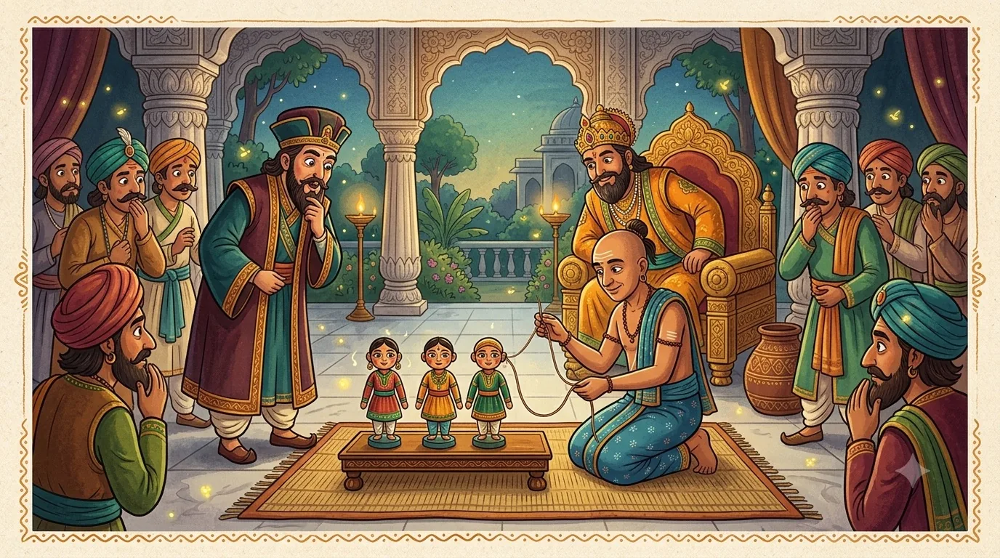

Tale FiveThe Three Little Dolls
“The best of friends is the one who listens well — and keeps what you tell them, safe.”
One morning a grand visitor arrived at court — a clever scholar from a faraway kingdom. He had come, he said with a sly bow, to test whether Krishnadevaraya's court was truly as wise as everyone claimed. From a velvet box he lifted three little dolls and set them in a row upon the marble floor.
The three dolls were exactly alike — same size, same painted smiles, same golden thread in their hair. You could not tell one from another. "Here is my riddle," said the scholar. "These dolls look the same, yet they are not worth the same. One is the most valuable, one the least. Tell me which is which — and why. Solve it, and I shall bow to your court's wisdom."
A court in silence
The eight great poets leaned in and squinted. They turned the dolls over. They weighed them in their palms. They found not one single difference! One by one, the wisest heads in the empire fell silent and stared at their feet. The faraway scholar began, ever so slightly, to smirk.
Then Tenali Raman stepped forward. He did not weigh the dolls or squint at their paint. He simply asked a servant for one thing: a long, thin thread.

A thoughtful, warm children's-book illustration in South-Indian folk-art style: inside a grand marble court hall, Tenali Raman kneels before three identical little painted dolls set in a row, carefully threading a long thin string into one doll's ear. The kind emperor leans forward from his golden throne, and a richly dressed foreign scholar with a curious expression watches closely. Other court poets look on, puzzled. Rich jewel tones — teal, marigold, oxblood — calm and clever mood, friendly for children, no text baked into the image. Target size ~1280×720px, 16:9 landscape; keep Tenali and the three dolls centred with safe margins — the art is letterboxed into a 16:9 box, so keep nothing important near the edges.
Generate this with your image agent, then drop the file here.
The test of the thread
Gently, Tenali slipped the end of the thread into the ear of the first doll. The thread travelled through — and came right out of the doll's other ear. "Aha," said Tenali. "This doll lets everything you tell it go in one ear and out the other. It remembers nothing and learns nothing. This is the doll worth the least."
He took the second doll and threaded its ear. This time the thread came out of the doll's mouth. "And this doll," said Tenali, "hears a secret and at once blurts it straight out to everyone. A doll — or a person — who cannot hold their tongue can do a great deal of harm. Worth a little more than the first, perhaps, but not much."
Last, he threaded the third doll's ear. The thread went in — and did not come out at all. It travelled down, down, and stayed deep inside, near the doll's heart. Tenali smiled. "Here is our treasure. This doll listens carefully, and keeps what it hears safe in its heart. It does not forget, and it does not gossip. This is the most valuable doll of the three."
The faraway scholar's smirk melted away. He pressed his palms together and bowed deeply to the whole court. "Your wisdom is everything they say, and more," he admitted. And the emperor beamed with pride at his jester poet, who had once again found the answer with nothing but a clever idea.
The most valuable person is the one who listens carefully and keeps a secret safely in their heart — not the one who forgets what you say, nor the one who blurts it to the world. Good listening is worth more than gold.
And so our five tales come to an end. Turn the page one last time for the Moral Chest — where every lesson from every story is kept together, ready whenever you need it.